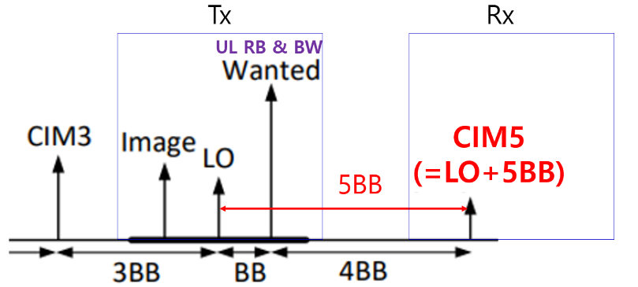
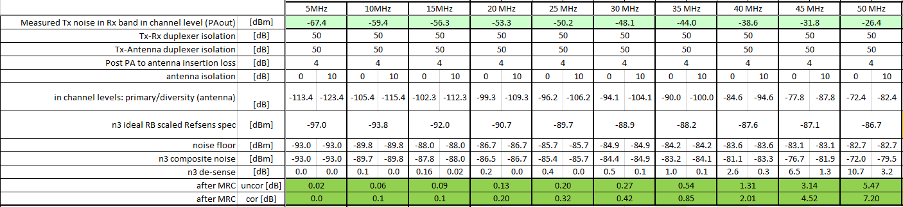
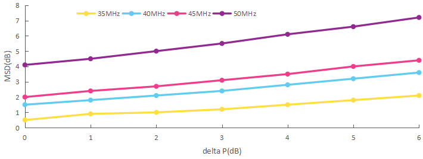
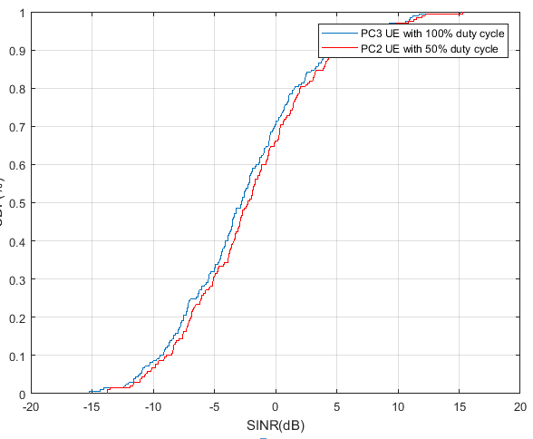
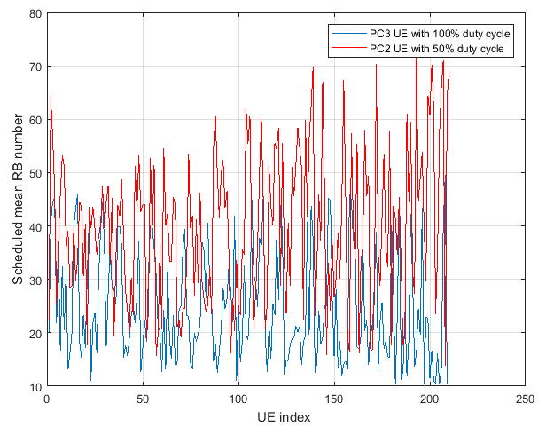
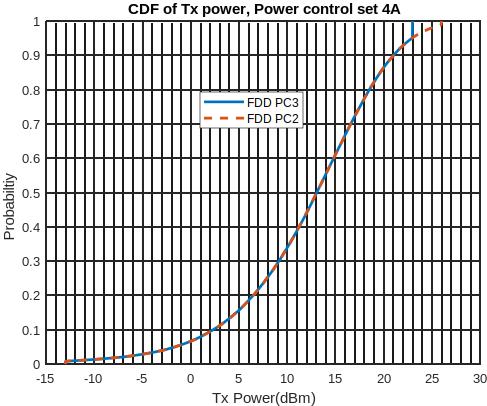
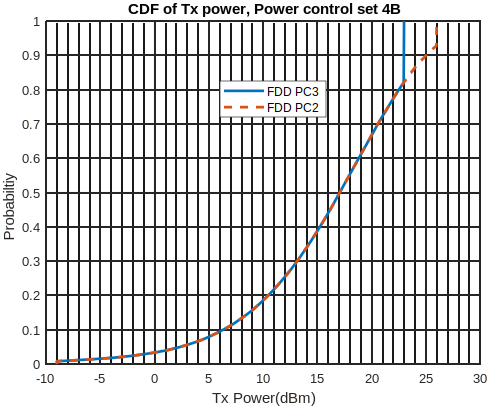

Technical Specification Group Radio Access Networks;
Study on high power UE (power class 2) for one NR FDD band
(Release 17)
The present document has been developed within the 3rd
Generation Partnership Project (3GPP TM) and may be further
elaborated for the purposes of 3GPP.
The present document has not been subject to any approval process by the
3GPP Organizational Partners and shall not be implemented.
This Specification is provided for future development work within 3GPP
only. The Organizational Partners accept no liability for any use of
this Specification.
Specifications and Reports for implementation of the 3GPP TM
system should be obtained via the 3GPP Organizational Partners'
Publications Offices.
3GPP
Postal address
3GPP support office address
650 Route des Lucioles - Sophia Antipolis
Valbonne - FRANCE
Tel.: +33 4 92 94 42 00 Fax: +33 4 93 65 47 16
Internet
http://www.3gpp.org
Copyright
Notification
No part may be reproduced except as authorized by written
permission.
The copyright and the foregoing restriction extend to reproduction in
all media.
UMTS™ is a Trade Mark of ETSI registered for the benefit of its
members
3GPP™ is a Trade Mark of ETSI registered for the benefit of its
Members and of the 3GPP Organizational Partners
LTE™ is a Trade Mark of ETSI registered for the benefit of its Members
and of the 3GPP Organizational Partners
GSM® and the GSM logo are registered and owned by the GSM
Association
This Technical Report has been produced by the 3rd Generation
Partnership Project (3GPP).
The contents of the present document are subject to continuing work
within the TSG and may change following formal TSG approval. Should the
TSG modify the contents of the present document, it will be re-released
by the TSG with an identifying change of release date and an increase in
version number as follows:
Version x.y.z
where:
x the first digit:
1 presented to TSG for information;
2 presented to TSG for approval;
3 or greater indicates TSG approved document under change
control.
y the second digit is incremented for all changes of substance, i.e.
technical enhancements, corrections, updates, etc.
z the third digit is incremented when editorial only changes have
been incorporated in the document.
In the present document, modal verbs have the following meanings:
shall indicates a mandatory requirement to do
something
shall not indicates an interdiction (prohibition) to
do something
The constructions "shall" and "shall not" are confined to the context
of normative provisions, and do not appear in Technical Reports.
The constructions "must" and "must not" are not used as substitutes
for "shall" and "shall not". Their use is avoided insofar as possible,
and they are not used in a normative context except in a direct citation
from an external, referenced, non-3GPP document, or so as to maintain
continuity of style when extending or modifying the provisions of such a
referenced document.
should indicates a recommendation to do
something
should not indicates a recommendation not to do
something
may indicates permission to do something
need not indicates permission not to do
something
The construction "may not" is ambiguous and is not used in normative
elements. The unambiguous constructions "might not" or "shall not" are
used instead, depending upon the meaning intended.
can indicates that something is possible
cannot indicates that something is impossible
The constructions "can" and "cannot" are not substitutes for "may"
and "need not".
will indicates that something is certain or expected
to happen as a result of action taken by an agency the behaviour of
which is outside the scope of the present document
will not indicates that something is certain or
expected not to happen as a result of action taken by an agency the
behaviour of which is outside the scope of the present document
might indicates a likelihood that something will
happen as a result of action taken by some agency the behaviour of which
is outside the scope of the present document
might not indicates a likelihood that something will
not happen as a result of action taken by some agency the behaviour of
which is outside the scope of the present document
In addition:
is (or any other verb in the indicative mood)
indicates a statement of fact
is not (or any other negative verb in the indicative
mood) indicates a statement of fact
The constructions "is" and "is not" do not indicate requirements.
1 Scope
The present document is a technical report for Study on high power UE
(power class 2) for one NR FDD band. The study includes the SAR
scheme(s), interference issues, UE implementation issues, and system
performance evaluations.
The example bands used for the study are NR band n1 and n3.
2 References
The following documents contain provisions which, through reference
in this text, constitute provisions of the present document.
- References are either specific (identified by date of publication,
edition number, version number, etc.) or non‑specific.
- For a specific reference, subsequent revisions do not apply.
- For a non-specific reference, the latest version applies. In the
case of a reference to a 3GPP document (including a GSM document), a
non-specific reference implicitly refers to the latest version of that
document in the same Release as the present document.
[1] 3GPP TR 21.905: "Vocabulary for 3GPP Specifications".
[2] 3GPP TS 38.101-1: "NR; User Equipment (UE) radio transmission and
reception; Part 1: Range 1 Standalone".
[3] 3GPP R4-2111528: "n3 50MHz REFSENS, A-MPR". 3GPP RAN WG4
Meeting#99-e, Skyworks Solutions, Inc.
[4] 3GPP R4-2114695: "n3 PC2 MSD". 3GPP RAN WG4 Meeting#100-e,
Skyworks Solutions, Inc.
[5] 3GPP R4-2112834: "Sensitivity analysis results and UE
implementation for PC2 FDD band ". 3GPP RAN WG4 Meeting#100-e, LG
Electronics.[6] 3GPP R4-2112911: "Discussion on interference for HPUE
FDD band ". 3GPP RAN WG4 Meeting#100-e, ZTE Corporation.
3 Definitions of
terms, symbols and abbreviations
3.1 Terms
For the purposes of the present document, the terms given in 3GPP
TR 21.905 [1] and the following apply. A term defined in the present
document takes precedence over the definition of the same term, if any,
in 3GPP TR 21.905 [1].
example: text used to clarify abstract rules by
applying them literally.
3.2 Symbols
For the purposes of the present document, the following symbols
apply:
<symbol> <Explanation>
3.3 Abbreviations
For the purposes of the present document, the abbreviations given in
3GPP TR 21.905 [1] and the following apply. An abbreviation defined in
the present document takes precedence over the definition of the same
abbreviation, if any, in 3GPP TR 21.905 [1].
<ABBREVIATION> <Expansion>
4 Background
4.1 Justification
Increasing the transmit power of UE has significant benefits on
extending cell coverage area and improving the experience of cell edge
users. In rel-16 one study item and two work items related to HPUE have
been proposed and worked on to standardize the requirements for EN-DC
scenarios.
However, extension of cell coverage for lower-frequency NR SA FDD
band is also important for some operators considering data throughput
for cell edge users is not satisfactory even in FDD bands, and further
increasing the UE transmit power would be beneficial for improving the
performance of cell edge users. Increasing the transmission power will
be beneficial for extending uplink coverage. SAR compliance schemes
should be considered (e.g. Existing duty cycle based solution could be
taken into consideration for this study, other solutions are not
precluded.).
This Study Item is proposed to solve SAR issues, and potentially
enable Power Class 2 UE for one FDD band with 26 dBm maximum output
power (UE types include smart phone, FWA, etc.). NR band n1 and n3 shall
be used as example band for this study.
4.2 Objective
The objectives of the SI are as follows:
1 Study the applicable scheme(s) for new power class 2 UE for one NR
FDD band to comply with the SAR limits with 26dBm UE Tx power, the
example band for this study is NR band n1 and n3.
a. Study candidate SAR solutions, e.g. P-MPR, duty cycle capability,
etc.
b. Study regulatory requirements related to 26dBm Tx power in FDD
bands including SAR.
Note: Prioritize studies for the existing SAR solutions.
2 Study interference issues (e.g. self-desense, cross device
coexistence…).
a. Study RF requirements for PC2 UE in FDD band, including
self-desense requirements, Tx requirements such as A-MPR, and so on.
b. Study adjacent channel co-existence for FDD band.
c. Investigate issues related to in-device interference, if
identified.
3 Study UE implementation related issues such as RF component
feasibility to support 26dBm output power in band n1 and n3 at first.
Other example FDD bands are not precluded, if needed.
Evaluate system performance gains on spectrum efficiency, and other
metrics if needed could also be taken into account, to support NR FDD
HPUE.
5 SAR Scheme
To accommodate the SAR limits of the NR PC2 FDD High Power UE, both
UE-based and network-based solutions are considered in the study phase.
For UE-based solution, the UE implementation based mechanism is used to
ensure SAR compliance. In addition to UE-based solution, an optional
method of reporting duty-cycle capability was also intensively
discussed, but there is no conclusion reached.
6 Interference
6.1 Receiver
sensitivity degradation evaluation
Based on following agreement, RAN4 need to evaluate the receiver
sensitivity degradation impact in NR band n1 and n3.
- Agreement: RAN4 can study receiver sensitivity degradation due to
high max. out power and Tx/Rx isolation levels according to RF component
performance in both n1 and n3 FDD bands.
- Companies are encouraged to bring analyses on receiver sensitivity
degradation in next meeting.
6.1.1
Sensitivity degradation results for normal CBW in n1/n3
To derive sensitivity degradation in n1/n3, RAN4 assumed the current
RFIC characteristics and Duplexer & PA characteristics in each NR
band.
In Table 6.1.1-1, the current RF component characterics are summaried
according to each NR band.
Table 6.1.1-1. RF parameters according to each NR band
parameters
NR n1 band
NR n3 band
Total NF (dB)
9.00
9.00
RFIC Noise for Rx band (dBm/Hz)
-153
-150
PA Noise for Rx band (dBm/Hz)
-125
-122
PA Gain for Rx band (dB)
28
28
Duplexer Tx/Rx isolation (dB)
53
49
RF Front-End Loss (dB)
4
4
Diversity gain (dB)
3
3
Antenna isolation (dB)
10
10
The receiver sensitivity will be impacted by duplexer isolation
levels and increasing noise level by RFIC and PA for Rx band at antenna
connector based on PC3 REFSENS requirements in each FDD bands.
Hence, the receiver sensitivity degradation will be derived based on
the increasing noise level in Rx band by duplexer isolation and RFIC/PA
noise for PC2 transmission in FDD band.
The following REFSENS is for PC3 UE in n3 FDD NR band as reference
point.
Table 6.1.1-2. REFSENS reference for PC3 UE in each NR band
NR n1 band
NR n3 band
Main path
Diversity path
Main path
Diversity path
C/N requirement (dB)
-1.00
-1.00
-1.00
-1.00
Noise floor at Antenna connector(dBm/Hz)
-165.0
-165.0
-165.0
-165.0
Total NF(RFFE lL + RF NF) (dB)
9.00
9.00
9.00
9.00
RFIC RX Band Noise level at Antenna connector (dBm/Hz)
-170.5
-180.5
-161.5
-171.5
PA RX Band Noise level at Antenna connector (dBm/Hz)
-170.5
-180.5
-161.5
-171.5
Total RXBN at Antenna connector (dBm/Hz)
-163.1
-164.7
-157.6
-163.4
Sensitivity with RXBN (PC3 max Tx power)(dBm) *10MHz
BW
-94.1
-95.7
-88.6
-94.4
After MRC
-98.0 (1.2dB margin)
-95.4 (1.6dB margin)
6.1.1.1
Dominant factor by Duplexer Tx/Rx isolation in each FDD band
Basically, the existing PA for FDD band need to improve the linearity
of maximum output power at least 3dB higher than current PA
characteristics based on section 7. Also duplexer aspect, filter vendor
need to enhanced the Tx/Rx isolation level to guarantee the existing
REFSENS or to relax desense impact. But it is also challenge to filter
vendors for small Tx/Rx frequency gap such as Band 3 or NR band n3.
So, just asumed 2dB Tx/Rx isolation levels by 3dB Transmission power
increasing would be impacted the sensitivity degradation compare to PC3
duplexer in n3.
In Table 6.1.1.1-1, the expected sensitivity degradation levels by
decreasing 2dB duplexer isolation level are shown.
Table 6.1.1.1-1. Sensitivity degradation by duplexer
isolation 2dB relaxation
NR n1 band
NR n3 band
Main path
Diversity path
Main path
Diversity path
C/N requirement (dB)
-1.00
-1.00
-1.00
-1.00
Noise floor at Antenna connector(dBm/Hz)
-165.0
-165.0
-165.0
-165.0
Total NF(RFFE lL + RF NF) (dB)
9.00
9.00
9.00
9.00
RFIC RX Band Noise level at Antenna connector (dBm/Hz)
-168.5
-178.5
-159.5
-169.5
PA RX Band Noise level at Antenna connector (dBm/Hz)
-168.5
-178.5
-159.5
-169.5
Total RXBN at Antenna connector (dBm/Hz)
-162.2
-164.6
-155.9
-162.6
Sensitivity with RXBN (PC3 max Tx power)(dBm) *10MHz BW
-93.2
-95.6
-86.9
-93.6
After MRC
-97.6 dBm 🡪 0.4dB MSD is needed
-94.5 dBm 🡪 0.9dB MSD is needed
Observation: In n3 FDD band, the 0.9 dB MSD is needed when
Duplexer isolation charateristic is decreased 2dB compare to current
filter characteristics.
Observation: In n1 FDD band, the 0.4dB MSD is needed when
Duplexer isolation charateristic is decreased 2dB compare to current
filter characteristics.
6.1.1.2
Dominant factor by RFIC/PA noise levles in Rx band
In this section, we consider the increased noise level in Rx band by
RFIC/PA operation in FDD band. Eventhough filter vendor try to keep or
enhance the the current Tx/Rx isolation level in duplexer for each FDD
band, the raised leakage problem in Rx band also shall be
considered.
Observation: Eventhough duplexer isolation level keep or
enhance the Tx/Rx isolation level, the raised leakage problem in Rx band
by RFIC/PA operation in FDD band will be impacted to the sensitivity
degradation in FDD band.
When we consider 3dB Tx power boosting, the noise level could be
increased by RFIC/PA operation in Rx band. So we assumed about 1.5dB
noise level increasing in Rx band to derive the expected MSD level
according to each FDD band.
Table 6.1.1.2-1. Sensitivity degradation by increasing noise level
(1.5dB) by RFIC/PA in Rx band
NR n1 band
NR n3 band
Main path
Diversity path
Main path
Diversity path
C/N requirement (dB)
-1.00
-1.00
-1.00
-1.00
Noise floor at Antenna connector(dBm/Hz)
-165.0
-165.0
-165.0
-165.0
Total NF(RFFE lL + RF NF) (dB)
9.00
9.00
9.00
9.00
RFIC RX Band Noise level at Antenna connector (dBm/Hz)
-169.0
-179.0
-160.0
-170.0
PA RX Band Noise level at Antenna connector (dBm/Hz)
-169.0
-179.0
-160.0
-170.0
Total RXBN at Antenna connector (dBm/Hz)
-162.4
-164.7
-156.4
-162.9
Sensitivity with RXBN (PC3 max Tx power)(dBm) *10MHz BW
-93.4
-95.7
-87.4
-93.9
After MRC
-97.7 dBm 🡪 0.3dB MSD is needed
-94.7 dBm 🡪 0.7dB MSD is needed
The expected MSD degradations are almost same as Duplexer isolation
degradation as shown in Table 6.1.1.1.
Observation: In n3 FDD band, the 0.7 dB MSD is needed when
assume noise level might be increased about 1.5dB in Rx band by RFIC/PA
operation.
Observation: In n1 FDD band, the 0.3dB MSD is needed when
assume noise level might be increased about 1.5dB in Rx band by RFIC/PA
operation.
6.1.1.3
Dominant factor by Duplexer and RFIC/PA noise levles in Rx band
In here we consider worst case for MSD analysis that means the
duplexer isolation could not keep and enhanced such as in n3 FDD band
due to small Tx/Rx frequency gap.
Then, above Duplexer performance decreasing and the noise level in Rx
band will be increased in RFIC by 3dB Tx power increasing for PC2 UE in
FDD band. So, the above two factor will be impacted in the receiver
sensitivity degradation in FDD band.
In Table 6.1.1.3-1, we provided the expected sensitivity degradation
by considering the duplexer characteristics and incresed noise level in
Rx band by RFIC/PA operation.
Table 6.1.1.3-1. Sensitivity degradation by duplexer isolation (2dB
relaxation) & incresed noise level (1.5dB) in Rx band by RFIC/PA
operation
NR n1 band
NR n3 band
Main path
Diversity path
Main path
Diversity path
C/N requirement (dB)
-1.00
-1.00
-1.00
-1.00
Noise floor at Antenna connector(dBm/Hz)
-165.0
-165.0
-165.0
-165.0
Total NF(RFFE lL + RF NF) (dB)
9.00
9.00
9.00
9.00
RFIC RX Band Noise level at Antenna connector (dBm/Hz)
-167.0
-177.0
-158.0
-168.0
PA RX Band Noise level at Antenna connector (dBm/Hz)
-167.0
-177.0
-158.0
-168.0
Total RXBN at Antenna connector (dBm/Hz)
-161.5
-164.5
-154.6
-162.0
Sensitivity with RXBN (PC3 max Tx power)(dBm) *10MHz BW
-92.5
-95.5
-85.6
-93.0
After MRC
-97.2 dBm 🡪 0.8dB MSD is needed
-93.7 dBm 🡪 1.7dB MSD is needed
Based on the expected RF component degradation, observations are
provided as follow
Observation: In n3 FDD band, the 1.7 dB MSD is needed when
both Duplexer isolation charateristic (2dB relaxation) and increased
noise level (1.5dB) in Rx band by RFIC/PA operation for PC2 FDD
UE.
Observation: In n1 FDD band, the 0.8dB MSD is needed when
both duplexer isolation charateristic (2dB relaxation) and increased
noise level (1.5dB) in Rx band by RFFIC/PA operation for PC2 FDD
UE.
6.1.2 Wide
channel bandwidth sensitivity analysis in n3
For the wide channel bandwidth (CBW) in n3 NR band, RAN4 need study
the sensitivity degradation to consider the counter IMD problem such as
CIM5 impact in n3 received frequency band as shown in Figure
6.1.2-1.

Figure 6.1.2-1 Impact on the CIMD5 problem in n3 NR band
6.1.2.1 LGE sensitivity
analysis results in n3
To derive sensitivity degradation in n3 with wide CBW, we assumed the
following as shown in Table 6.1.2.1-1.
Table 6.1.2.1-1. RF parameters according to each NR band
parameters
NR n3 band
Total NF (dB)
9.00
counter-intermodulation products CIM5 (dBc)
-60
RFIC Noise for Rx band (dBm/Hz)
-150
PA Noise for Rx band (dBm/Hz)
-122
PA Gain for Rx band (dB)
28
Duplexer Tx/Rx isolation (dB)
47
RF Front-End Loss (dB)
4
Diversity gain (dB)
3
Antenna isolation (dB)
10
The receiver sensitivity will be impacted by duplexer isolation
levels and increasing noise level by RFIC and PA for Rx band at antenna
connector based on PC3 REFSENS requirements in each CBW.
Hence, the receiver sensitivity degradation will be derived based on
the increasing noise level in Rx band by duplexer isolation and RFIC/PA
noise due to CIM5 from PC2 transmission in FDD band.
The following REFSENS analysis is for PC3 UE in n3 FDD NR band with
40Mhz and 50MHz CBW as reference point.
Table 6.1.2.1-2. REFSENS reference for PC3 FDD UE in each CBW(40MHz,
50MHz)
NR n3 band
40MHz CBW
NR n3 band
50MHz CBW
Main path
Diversity path
Main path
Diversity path
C/N requirement (dB)
-1.0
-1.0
-1.0
-1.0
Noise floor at Antenna connector(dBm/Hz)
-165.0
-165.0
-165.0
-165.0
Total NF(RFFE lL + RF NF) (dB)
9.0
9.0
9.0
9.0
CIM5 at Antenna connector (dBm/Hz)
-152.5
-162.5
-150.5
-160.5
RFIC RX Band Noise level at Antenna connector (dBm/Hz)
-161.5
-171.5
-161.5
-171.5
PA RX Band Noise level at Antenna connector (dBm/Hz)
-161.5
-171.5
-161.5
-171.5
Total RXBN at Antenna connector (dBm/Hz)
-151.3
-159.9
-149.7
-158.7
Sensitivity with RXBN (PC3 max Tx power)(dBm/CBW)
-76.3
-84.9
-73.7
-82.7
After MRC
-85.5 (3.2dB margin)
-83.2 (3.5dB margin)
In Table 6.1.2.1-3, we provided the expected sensitivity degradation
to consider the counter IMD problem in wide CBW for PC2 UE for n3
band.
Table 6.1.2.1-3. Sensitivity degradation for PC2 FDD UE in each
CBW(40MHz, 50MHz)
NR n3 band
40MHz CBW
NR n3 band
50MHz CBW
Main path
Diversity path
Main path
Diversity path
C/N requirement (dB)
-1.0
-1.0
-1.0
-1.0
Noise floor at Antenna connector(dBm/Hz)
-165.0
-165.0
-165.0
-165.0
Total NF(RFFE lL + RF NF) (dB)
9.0
9.0
9.0
9.0
CIM5 at Antenna connector (dBm/Hz)
-149.5
-159.5
-147.5
-157.5
RFIC RX Band Noise level at Antenna connector (dBm/Hz)
-160.0
-170.0
-160.0
-170.0
PA RX Band Noise level at Antenna connector (dBm/Hz)
-160.0
-170.0
-160.0
-170.0
Total RXBN at Antenna connector (dBm/Hz)
-148.7
-157.9
-147.0
-156.4
Sensitivity with RXBN (PC2 max Tx power)(dBm/CBW)
-73.7
-82.8
-71.0
-80.4
After MRC
-83.3 dBm 🡪 2.1dB MSD is needed
-80.9 dBm 🡪 2.4dB MSD is needed
Observation: In 40M CBW, the 2.1 dB MSD by CIMD5 is needed
when PC2 transmission in n3 FDD band.
Observation: In 50M CBW, the 2.4 dB MSD by CIMD5 is needed
when PC2 transmission in n3 FDD band.
Hence, RAN4 recommand as follow
To reduce the sensitivity degradation in n3/n1 band, filter vendor
shall keep or enhance the duplexer Tx/Rx isolation level for FDD bands
to support PC2 UE.
Based on RF component improvement, RAN4 can further study for
sensitivity degradation requirements when RF component vendor provide
these commercial Duplexer, PAs and RFICs for PC2 UE in FDD band in WI
phase.
6.1.2.2 SKW sensitivity
analysis results in n3
To derive the sensitivity degradation in n3 band, we use the same UL
RB allocations than those agreed for PC3 NR UE in n3 band.
The PA noise levels in the receiver band and corresponding MSD levels
can be found in Figure 6.1.2.2-1 as below.

Figure 6.1.2.2-1 Measured Tx noise and corresponding MSD levels for
all CBW.
The estimated MSD levels for in 35MHz, 40MHz, 45MHz and 50MHz CBW
lead to REFSENS levels that are lower than those agreed for PC3
operation. For these CBW, we tentatively propose to use the same
approach as in [3], i.e. we propose PC2 REFSENS levels by evaluating the
MSD level difference between PC3 and PC2 and apply this MSD difference
to PC3 REFSENS levels. We observe the following MSD difference vs
CBW:
- 3.1dB for 50MHz CBW: PC2 MSD of 7.2dB vs PC3 MSD of 4.1dB [3],
- 2.5dB for 45MHz CBW: PC2 MSD of 4.5dB vs PC3 MSD 2dB [3],
- 0.6dB for 40MHz CBW: PC2 MSD of 2.0 dB vs PC3 MSD of 1.5dB [3],
- 0.2dB for 35MHz CBW: PC2 MSD of 0.9 dB vs PC3 MSD of 0.7 dB
[3].
For CBW less than or equal to 30MHz, the PC2 MSD can be
neglected.
n3 PC2 REFSENS levels and UL configurations are proposed in Table
6.1.2.2-1 and Table 6.1.2.2-2.
Table 6.1.2.2-1: n3 PC2 REFSENS
UL configuration
SCS
(kHz)
5
MHz
(dBm)
10
MHz
(dBm)
15
MHz
(dBm)
20
MHz
(dBm)
25
MHz
(dBm)
30
MHz
(dBm)
35 MHz
(dBm)
40 MHz
(dBm)
45
MHz
(dBm)
50
MHz
(dBm)
Duplex mode
n3
15
-97.0
-93.8
-92.0
-90.8
-89.7
-88.9
-86.0
-81.7
-78.8
-76.6
FDD
30
-94.1
-92.1
-91.0
-89.8
-89.0
-86.1
-81.8
-78.9
-76.7
60
-94.5
-92.4
-91.2
-90.0
-89.1
-86.2
-82.0
-79.0
-76.8
NOTE 1: Four Rx antenna ports shall be the baseline
for this operating band except for two Rx vehicular UE.
NOTE 2: The transmitter shall be set to PUMAX as defined in clause
6.2.4
NOTE 1: UL resource blocks shall be located as close as
possible to the downlink operating band but confined within the
transmission bandwidth configuration for the channel bandwidth (Table
5.3.2-1).
6.1.2.3 ZTE sensitivity
analysis results in n3
For band n3, the situation is more complicated since CIM5 may need to
be considered for some larger CBWs such as 35MHz, 40MHz 45MHz and 50MHz,
shown in Table 6.1.2.3-1. We can see from Table 6.1.2.3-1, there are
CIM5 problem for 40MHz, 45MHz and 50MHz with the same UL configurations
of 50RB, which will further degrade the REFSEN requirements. Therefore,
when the maximum output power increase 3dB, CIM5 value will become large
which will cause REFSEN degradation more severe.
Table 6.1.2.3-1. CIM5 calculation for band n3
CBW_Tx
20
25
30
35
40
45
50
CBW_Rx
20
25
30
35
40
45
50
Ful
1775
1772.5
1770
1767.5
1765
1762.5
1760
UL RB
50
50
50
50
50
50
50
Fdl
1870
1867.5
1865
1862.5
1860
1857.5
1855
Rx_high
1880
1880
1880
1880
1880
1880
1880
Rx_low
1860
1855
1850
1845
1840
1835
1830
CIM5 low
1777.7
1787.4
1797.0
1807.1
1817.2
1826.4
1836.5
CIM5 center
1800.2
1809.9
1819.5
1829.6
1839.75
1848.9
1859.0
CIM5 high
1822.7
1832.4
1842.0
1852.1
1862.2
1871.4
1881.5
Similar with band n1, we cite some measurement results in [3] as
follow:
The measured TX noise levels in RX band are:
- 35 MHz: -45 dBm,
- 40 MHz: -40.4 dBm,
- 45 MHz: -38 dBm,
- 50 MHz: -32.3 dBm
In addition, 50 dB Tx to RX and Tx to Antenna duplexer rejection in
Rx band, as a worst case assumption. With the above measurement, the MSD
levels for CBW>35MHz channel bandwidths are larger than 0.5dB, which
means the REFENS requirements cannot be scaled by the channel bandwidth
since CIM5 interference needs to be considered.
To roughly simulate the PC2 case, here we increase the additional Tx
noise (i.e. delta P from 0~6dB) on top of the above measured Tx noise
levels in Rx band , where 0dB means no additional measured Tx noise,
i.e. same with PC3 case. The MSD levels are shown in Figure 6.1.2.3-1 as
follow:

Figure 6.1.2.3-1 Expected MSD levels in n3 according to delta
P
In can be seen that the MSD levels are increased by the delta P due
to the total Tx noise levels in RX band increased. The slope for larger
CBW is steeper than the small CBW. Assuming additional 6dB total Tx
noise on top of the existing measured ones, then to guarantee the same
REFSEN requirements as PC3 for PC2, ~5dB additional duplexer rejections
on top of the existing one would be needed.
Observation: For band n3, assuming additional 6dB total noise
caused by increasing 3dB MOP, then ~5dB additional duplexer rejections
on top of the existing one could be needed to guarantee the existing PC3
REFSEN requirements for PC2.
The duplexers filter can achieve better isolation than what was used
as an assumption (i.e. 50dB) for LTE FDD bands and copied to NR
considering the today’s duplexer state-of-the-art. Therefore, to reduce
the PC2 REFSEN requirements for band n1 or band n3, better duplexer
Tx/Rx (more than 50dB such as 55dB) could be needed.
From the above sensitivity degradation simulation results, RAN4
summarize the required sentitivity degradation levels as shown in Table
6.1-1 and Table 6.1-2. The reference points are PC3 REFSENS requirements
in TS38.101-1 to decide the required sensitivity level for PC2 UE.
Table 6.1-1. Required sensitivity degradation levels in n1 NR
Band for PC2 UE
n1 band
PC2 [5]
PC2 [4]
PC2 [6]
Reference point
10 MHz (-96.8dBm)
0.8 dB
-
-
Table 6.1-2. Required sensitivity degradation levels in n3 NR
Band for PC2 UE
n3 band
PC2 [5]
PC2 [4]
PC2 [6]
Reference point
0.0 dB
10 MHz (-93.8dBm)
1.7 dB
0.0 dB
20 MHz (-90.8dBm)
0.0 dB
30 MHz (-88.9dBm)
0.0 dB
35 MHz (-86.2dBm)
0.2 dB
0.9 dB
40 MHz (-82.3dBm)
2.1 dB
0.6 dB
1.4 dB
45 MHz (-81.3dBm)
2.5 dB
1.8 dB
50 MHz (-79.7dBm)
2.4 dB
3.1 dB
2.7 dB
The above two tables will be considered as starting point to
determine the exact REFSENS levels for FDD PC2 UE in WI phase.
7 UE implementations
In this section, we take a look at the RF component performance in
FDD band such as n1/n3.
7.1 Current RF
component characteristics in FDD band
Generally, RAN4 considered RF front-end loss as 4dB for smart phone
form facter for PC3 and PC2 UE. Then, to support PC2 UE in FDD band,
both PA and Duplexer shall support the allowed max. output with at least
30 dBm power to support PC2 UE.
7.1.1 Power Amplifier
characteristics
The following characteristics of PA are shown in Table 7.1.1.1 and
Table 7.1.1.2
- PA characteristic of Linearity Maximum Output power in n3
Table 7.1.1.1. PA max. out put power in n3
Parameter
Symbol
Conditions
Min.
Typ.
Max.
Unit
Operating Frequency
f0
1710
1785
MHz
Maximum NR Output Power
POUT_MAX_NR_NTC
VCC = 3.8V, NTC
28
dBm
※Condition : SC-FDMA, MPR 0dB
- PA characteristic of Linearity Maximum Output power in n1
Table 7.1.1.2. PA max. out put power in n1
Parameter
Symbol
Conditions
Min.
Typ.
Max.
Unit
Operating Frequency
f0
1920
1980
MHz
Maximum NR Output Power
POUT_MAX_NR_NTC
VCC = 3.8V, NTC
27.5
dBm
※Condition : SC-FDMA, MPR 0dB
- MMPA characteristic of Linearity Maximum Output power in
n1/n2/n3/n4/n25
Table 7.1.1.3. MMPA max. out put power in n1/n2/n3/n4/n25
Parameter
Conditions
Min.
Typ.
Max.
Units
Frequency Range
Band 1
1920
1980
MHz
Band 2
1850
1910
Band 3
1710
1785
Band 4
1710
1755
Band 25
1850
1915
Maximum Linear Output Power
HPM, VCC = 3.4V
28.5(1)
dBm
LPM, VCC = 0.7V
3.5
※Condition : SC-FDMA, MPR 0dB
Based on above PA performance information in FDD band, we can see
that current PA need to improve the linearity of maximum output power at
least 3dB higher than current PA characteristics.
7.1.2 Duplexer characteristics
The following characteristics of Duplexer are shown in Table 7.1.2.1
and Table 7.1.2.2
- Duplexer characteristic for the allowed max. input power in n3
Table 7.1.2.1. Duplexer max. input power in n3
Input power at PIN 1712.50-1782.50MHz
29
dBm
source and load impedance 50Ω 5MHz LTE uplink @50℃, 5000h
※Condition : SC-FDMA, MPR 0dB
- Duplexer characteristic for allowed max. input power in n1
Table 7.1.2.2. Duplexer max. input power in n1
Input Power
+29dBm 5000h +55deg.C
※Condition : SC-FDMA, MPR 0dB
Based on above Duplexer performance information in FDD band, we can
see that current Duplexer also need to improve the maximum power rating
at least 2~3dB higher than the current Duplexer characteristics.
Therefore, RAN4 can study on high power UE (power class 2) for one NR
FDD band when RF component vendor are ready to support the RF component
performance to support PC2 UE in FDD band.
From the above current RF component characteristics, we share our
observation and proposal as follow
Observation : In FDD band, the PA/Duplexer charateristic is
not support PC2 maximum output power since PA linearity and Duplexer
allowed maximum power rating shall improve the performance at least 3dB
higher than current component charateristics.
8 System Performance
Evaluation
8.1 Dynamic system level
simulation
8.1.1 General
The dynamic system level simulation is usually used to evaluate the
system performance gain, which can simulate the behavior of system in
more detail. The HPUE feature can improve UL coverage but at the same
time increase the interference of the neighboring cells, and the final
system performance gain is evaluated by the average cell uplink
throughput and 5%-tile cell-edge uplink throughput.
In addition, the SAR issue is also a practical factor that limits
HPUE performance. Restricting duty-cycle is a commonly used method to
avoid SAR issue, and it is widely used in TDD systems. However, there
are some difficulties in compatibility between duty-cycle and FDD
systems, but in order to include the potential impact of scheduling
constraints on system performance due to the SAR issues, the 50%
duty-cycle restriction should also be evaluated.
8.1.2 Simulation assumptions
The simulation assumptions for dynamic system level simulation are
included in Table 8.1.2-1
Table 8.1.2-1. Simulation Assumptions
Configuration parameters
Values
Scenario
Urban macro
ISD
500 m
Duplexing
FDD
Carrier frequency
1.8 GHz, 2.1GHz
Modulation
Up to 64QAM, 256QAM is optional
Numerology
15 kHz
Simulation bandwidth
40 MHz
Transmission scheme
SU-MIMO
Codebook
For 2Tx, codebook [1 1]T is used for transmit diversity
Note: HPUE ratio 100% baseline, 50% and 25% are
optional
Further evaluation based on other traffic models for reference are
not precluded.
8.1.3 Simulation results
8.1.3.1 P0 = -76, alpha = 0.6
Company 1 (R4-2109699)
In the simulation, all UEs are assumed to have high power capability
and the results are shown in Table 8.1.3.1-1
Table 8.1.3.1-1: Simulation Results for Alpha =0.6
Antenna
Max Tx
Power
/dBm
Packet
size
Packet
arrival
rate
Duty cycle
Cell avg.
UPT
/Mbps
5% UPT
/Mbps
Cell avg.
UPT gain
5% UPT
gain
BS: 4R
UE: 1T
23
100k Byte
5 file/s
100%
190.1
3.04
0%,
baseline
0%,
baseline
BS: 4R
UE: 1T
26
100k Byte
5 file/s
100%
192.1
4.24
1.0%
39.4%
BS: 4R
UE: 1T
26
100k Byte
5 file/s
50%
190.3
3.12
0.1%
2.7%
For alpha = 0.6, The proportion of UEs working at high power is
relatively small, and the performance gain of PC2 UE is reflected in
edge users which is also in line with the expected purpose. However, the
50% duty-cycle will significantly reduce the performance gain because
high-power users are mainly distributed at the edge of the cell at this
time.
Table 8.1.3.2-1: Simulation Results for Alpha =0.8
Antenna
Max Tx
Power
/dBm
Packet
size
Packet
arrival
rate
Duty cycle
Cell avg.
UPT
/Mbps
5% UPT
/Mbps
Cell avg.
UPT gain
5% UPT
gain
BS: 4R
UE: 1T
23
100k Byte
5 file/s
100%
146.2
1.36
0%,
baseline
0%,
baseline
BS: 4R
UE: 1T
26
100k Byte
5 file/s
100%
179.8
1.73
23.0%
27.4%
BS: 4R
UE: 1T
26
100k Byte
5 file/s
50%
176.9
1.53
21.0%
12.2%
When the alpha rises to 0.8, the proportion of high-power users will
increase. PC2 UEs will significantly improve cell average and edge
performance. Since high-power users are not only distributed at the 5%
edge of the cell at this time, the performance gain reduction caused by
the 50% duty-cycle is relatively small. It is worth noting that the
alpha change has caused the power of most UEs to rise, which increases
the overall interference level, and the absolute value of the cell
throughput decreases relative to the case of alpha=0.6.
Company 2 (R4-2104922)
The detailed simulation results for band n3 are shown in Table
8.1.3.2-2
Table 8.1.3.2-2: Dynamic system level simulation results
Antenna
Configuration
Maximum Tx
Power(dBm)
Duty cycle
(%)
Packet size
(k Byte)
Arrival rate
(file/s)
5% UPT
(Mbps)
Average UPT
(Mbps)
1Tx 4Rx
23
100
10
5
7.95
0%
45.45
0%
1Tx 4Rx
26
100
10
5
10.13
+27%
56.84
+25%
1Tx 4Rx
26
50
10
5
8.57
+8%
56.62
+25%
2Tx 4Rx
26
100
10
5
10.70
+35%
57.14
+26%
2Tx 4Rx
26
50
10
5
9.03
+14%
56.98
+25%
Company 3 (R4-2107300, R4-2111446)
In the simulation assumptions, some parameters have more than one set
of values. For the different values, more simulation cases are
performed. Table 8.1.3.2-3 and 8.1.3.2-4 provides the simulation
results.
In addition, the statistics of resource utilization (RU) are shown in
Table 8.1.3.5.1-1
Table 8.1.3.5-1: The resource utilization in simulation
Alpha = 0.6
Alpha = 0.8
14.4%
2.3%
Resource utilization is at a relatively low level which may cause
some potential simulation vulnerabilities. Low resource utilization may
mean that high-power users at the edge complete data transmission
quickly, and there will be no scheduling conflicts between different
UEs. This will cause the interference increase caused by high power to
be hidden. To remedy this problem, some simulation results of higher
resource utilization are provided as Table 8.1.3.5.1-2 and Table
8.1.3.5.1-3.
Table 8.1.3.5-2: High data density transmission simulation result
（alpha =0.6, 100% duty-cycle)
PC3（baseline）
PC2
packet size
(k Byte)
arrival rate
(file/s)
(RU (%)
Cell avg. UPT
/Mbps
5% UPT
/Mbps
RU (%)
Cell avg. UPT
/Mbps
5% UPT
/Mbps
Cell avg. UPT gain
5% UPT gain
100K
10
32.81
184.85
2.76
34.36
186.17
3.78
0.72%
37.1%
100K
20
54.83
166.9
1.75
57.18
167.31
2.39
0.24%
36.1%
100K
40
80.3
136.6
0.15
82.5
135.9
0.16
-0.48%
7.5%
Table 8.1.3.5-3: High data density transmission simulation result
（alpha =0.8, 100% duty-cycle）
PC3（baseline）
PC2
packet size
(k Byte)
arrival rate
(file/s)
(RU (%)
Cell avg. UPT
/Mbps
5% UPT
/Mbps
RU (%)
Cell avg. UPT
/Mbps
5% UPT
/Mbps
Cell avg. UPT gain
5% UPT gain
500K
10
23.46
268.42
0.06
24.32
340.37
0.066
26.8%
10%
500K
20
35.80
235.8
0.052
38.76
296.97
0.056
25.9%
7.7%
500K
40
47.43
215.1
0.045
53.7
262.86
0.0453
22.2%
0.5%
The result shows that when the resource utilization increase, the
system performance gain of cell average still considerable. However, the
performance of cell edge will be tiny when the RU rise to about 50%.
Note that under the same traffic model, the RU of PC2 UE will be
slightly larger than that of PC3. This is caused by the decrease in SINR
due to increased interference at high power.
Company 3 (R4-2111446)
Figure 8.1.3.5-1 shows the CDF curve of the UE. From Figure 1,
although the interference increases with the increase of transmit power
of PC2 UE, there is still 1dB gain compared with the PC3 UE. And Figure
8.1.3.5-2 shows the actual number of scheduled RB for the PC2 UE and PC3
UE sorted by UE throughput. For the cell edge UE (5% UPT UE), the number
of the scheduled RB for PC2 UE is more than twice of the PC3 UE.
Therefore, even though the PC2 UE has 50% restriction, due to the gain
of the SINR and the more scheduled RB for PC2 UE, the average and cell
edge cases could have an obvious performance gain.

Figure 8.1.3.5-1 SINR CDF of PC2 UE (50% duty cycle) and PC3 UE (100%
duty cycle)

Figure 8.1.3.5-2 Number of scheduled RB per UE sorted by the UE
throughput
8.2 Monte Carlo simulation
8.2.1 Simulation methodology
The Monte Carlo based static system level simulation is typical
simulation method used in the coexistence study and can also be used for
the simplified system performance evaluation. The sub-snapshot method is
agreed as one of possible methods to simulate the HPUE feature.
The difference for UL duty cycle is emulated by assuming there are N
sub-snapshots within one snapshot. For example, we can set N=2 for the
case of 50% duty cycle for FDD HPUE. Similarly, we can set N=4 for the
case of 25% duty cycle. In each snapshot, UEs are randomly placed in a
predefined deployment scenario. But within one snapshot, the UEs’
locations for N sub-snapshots are fixed. Table 8.2.1-1 illustrates the
sub-snapshot concept and the simulation method. When the simulation
performance is assumed to be measured within one frame (e.g., 10ms) and
only 50% time can be used for UL transmission within one frame assuming
50% duty cycle. Then each sub-snapshot can be considered as 5ms in the
Monte-Carlo simulation.
Table 8.2.1-1. An example to compare FDD PC2 UE (50% DC) and FDD PC3
UE (100% DC)
UE type
The first sub-snapshot
The second sub-snapshot
UL duty cycle
FDD PC3 UEs
Max. Tx power is 23dBm
Max. Tx power is 23dBm
100%
FDD PC2 UEs with transmission power >23dBm
Max. Tx power is 26dBm
No transmission
50%
Note 1: For PC2 UEs with transmission power ≤ 23dBm,
there is no need to reduce the UL duty cycle since there is no SAR
issue.
Note 2: For simplicity, 50% UL duty cycle will be applied once PC2
UEs transmit power is larger than 23dBm.
Note 3: PC2 UEs with 50% UL duty can randomly transmit power at the
first or the second sub-snapshot.
Non-full buffer and full buffer scenarios are both considered in the
simulation. For the non-full buffer scenario, the resource will not be
used in the sub-snapshot which there is no transmission for the UE with
>23dBm Tx power. For the full buffer scenario, a new user will be
scheduled in one of the two sub-snapshots when the UE with >23dBm Tx
power will not transmit in that correspondent sub-snapshot due to 50%
duty cycle.
There are also other evaluation methods can be implemented to
stimulate the duty cycle in the Monte Carlo simulation, such as drawing
a random number in each snapshot. If the random number is larger than
the duty cycle, then the HPUE will be replaced with another UE; If the
random number is less than the duty cycle, then the HPUE will transmit
normally with Tx power up to 26 dBm.
8.2.2 Simulation assumptions
The simulation assumptions using Monte-Carlo simulation are as Table
8.2.2-1.
The power control (PC) set 4A and 4B are selected for performance
evaluation which refers to TR36.886 chapter 5.10.1.2. The parameters are
presented in Table 8.2.2-2.
Table 8.2.2-2. PC set parameters for 23dBm UE and 26 dBm UE with 0.75
km ISD
Power control set parameter
Gamma
CLx-ile for BW 40MHz
23dBm
26dBm
Set 4A
1
104
107
Set 4B
1
100
103
Note: The original table in 36.886 is for 20MHz
bandwidth, thus the value needed to be adjusted for 40MHz bandwidth
correspondently.
Figure 8.2.2-1 and 8.2.2-2 are the CDF curve of Tx power for power
control set 4A and 4B, respectively, to show the difference between FDD
PC2 and PC3.

Figure 8.2.2-1. UL Tx power CDF for power control set 4A

Figure 8.8.2-2. UL Tx power CDF for power control set 4B
8.2.3 Simulation results
8.2.3.1 Simulation results for power control set 4A
The ratio of UL Tx power > 23dBm is about 4.9% for power control
set 4A.
In a more realistic situation, for example, considering a relatively
long-time duration, the time restriction for UE duty cycle can be
relaxed assuming that UE can keep transmit with >23dBm power in its
scheduled duration. After the UE finishes its transmission, another UE
will be scheduled. In this scenario, the UE can naturally realize the
50% duty cycle by the scheduling time since the UE will not be always
scheduled. The duty cycle then does not need to be considered in the
result processing. Therefore, the system performances are shown in Table
8.2.3.1-1 and Table 8.2.3.1-2.
Table 8.2.3.1-1. PC2 system performance for non-full buffer case with
PC set 4A
when 50% duty cycle is considered in a longer duration
Power control set
4A
4A
4A
PC2 UE ratio
25%
50%
100%
5% throughput gain
1.22%
2.44%
4.27%
Cell throughput gain
0.40%
1.04%
2.39%
Table 8.2.3.1-2. PC2 system performance for full buffer with PC set
4A
when 50% duty cycle is considered in a longer duration
Power control set
4A
4A
4A
PC2 UE ratio
25%
50%
100%
5% throughput gain
0.61%
1.83%
3.05%
Cell throughput gain
0.48%
1.12%
2.55%
As shown in Table 8.2.3.1-1 and Table 8.2.3.1-2:
- When 50% duty cycle can be realized in a longer duration,
performance gain can be observed for the 5% throughput. The gain’s value
depends on the PC2 UE ratio and the traffic loading.
- When 50% duty cycle can be realized in a longer duration,
performance gain can be observed for the average cell throughput. The
gain’s value depends on the PC2 UE ratio and the traffic loading.
- When 50% duty cycle can be realized in a longer duration, higher
PC2 UE ratio will bring higher 5%-throughput gain as well as the average
cell throughput gain. The system performance gain is highly related with
PC2 UE ratio.
8.2.3.2 Simulation results for power control set 4B
The Tx power ratio UL Tx power > 23dBm is about 17.8% for power
control set 4B.
Similar consideration is applied, when 50% duty cycle can be realized
in a longer duration, the 50% duty cycle need not be considered in the
performance processing. Therefore, the system performance is shown in
Table 8.2.3.2-1 and Table 8.2.3.2-2.
Table 8.2.3.2-1. PC2 system performance for non-full buffer with PC
set 4B
when 50% duty cycle is considered in a longer duration
Power control set
4B
4B
4B
PC2 UE ratio
25%
50%
100%
5% throughput gain
5.13%
10.26%
17.31%
Cell throughput gain
0.81%
1.98%
5.50%
Table 8.2.3.2-2. PC2 system performance for full buffer with PC set
4B
when 50% duty cycle is considered in a longer duration
Power control set
4B
4B
4B
PC2 UE ratio
25%
50%
100%
5% throughput gain
3.85%
8.33%
15.38%
Cell throughput gain
1.03%
2.20%
4.84%
From the simulation results shown in chapter 8.2.3.2, the similar
performance variance trend can be observed for the power control set 4B,
compared with power control set 4A.
8.2.3.3 Simulation observations
The system performance is sensitive to the power control set
parameters. In realistic situation, where several UEs are multiplexed in
the same cell, non-negligible gain in UL performance can be observed in
both mean and 5%-tile throughput.
9 SI Conclusion
In this study item, different aspects of enabling PC2 in NR FDD band
n1 and n3 are thoroughly studied. The contents of the study include the
applicable schemes to comply with SAR limits with 26dBm UE Tx power, the
interference issues raised by FDD PC2, UE implementation and RF
architectures, as well as system performance evaluation to support NR
FDD HPUE.
Several SAR compliance solutions are studied and discussed in RAN4,
including UE-implementation based methods, reusing of existing
duty-cycle reporting method, and half-duplex operation method. After
careful studies and thorough discussions, the UE-implementation based
methods are considered feasible to make sure SAR regulation is not
violated. In addition, optional feature of applying duty cycle is also
considered, as a standardized solution, to solve SAR compliance
issue.
Regarding the interference issues, it was identified by the group
that both MSD and UL configuration are possible alternatives to handle
REFSENS degradation in FDD PC2, and the MSD method will be adopted for
the cases of n1 and n3 PC2. MSD values can first be calculated based on
available RF components and existing assumptions. If there are new
components available in the future with better performance, new
assumptions can also be considered for MSD calculations.
In order to support 26dBm UE Tx power, two RF architectures (i.e.
2Tx×23dBm and 1Tx×26dBm) are considered and agreed during the study. It
is found out that FDD HPUE with 2Tx architecture is feasible and can
reuse existing RF components targeted for PC3, while 1Tx may need to use
newly designed components. So further analyses of 1Tx architecture could
be carried out when the new components become available.
To fully evaluate the impacts of FDD HPUE to the system performance,
Dynamic system level simulations and Monte Carlo simulations are carried
out. In dynamic system level simulation, performance gain for both cell
average and cell edge cases are verified under various power control
parameters. On the other hand, performance gain can be observed for the
5%-tile throughput and average cell throughput under Monte Carlo
simulation. The potential DL degradation due to Tx/Rx de-sense does not
lead to substantial performance degradation in typical interference
limited scenarios.
In conclusion, it is shown in this SI that high power UE (power class
2) for NR FDD band brings positive system performance gain to the
network, and it is feasible to reuse existing RF components to support
26dBm UE Tx power, while new components with performance improvement are
also expected to be available in the future. UE implementation based
solution (P-MPR) is used for SAR compliance. There is no consensus on
the optional report of duty cycle capability, but duty cycle used as an
UE implementation method is not precluded. Specific MSD values and other
specification impact(s) will be determined in the Work Item phase.
Annex <A> (informative):
Change history
Change
history
Date
Meeting
TDoc
CR
Rev
Cat
Subject/Comment
New version
2021-04
RAN4-98-bis-e
R4-2106912
Initial TR skeleton
0.0.1
2021-05
RAN4-99-e
R4-2110798
TP to TR38.861: Simulation results for FDD HPUE
0.1.0
2021-05
RAN4-99-e
R4-2108866
TR 38.861 v0.1.0 FS_NR_PC2_UE_FDD
0.1.0
2021-06
RAN-92-e
RP-211346
TR 38.861 v1.0.0 FS_NR_PC2_UE_FDD
1.0.0
2021-08
RAN4-100-e
R4-2115062
TP for TR 38.861: Conclusion of SI for FDD HPUE
1.1.0
2021-08
RAN4-100-e
R4-2115063
TP on Sensitivity analysis results and UE implementation for PC2 FDD
band
1.1.0
2021-08
RAN4-100-e
R4-2113001
TP to TR38.861 Dynamic system level simulation results for FDD
HPUE